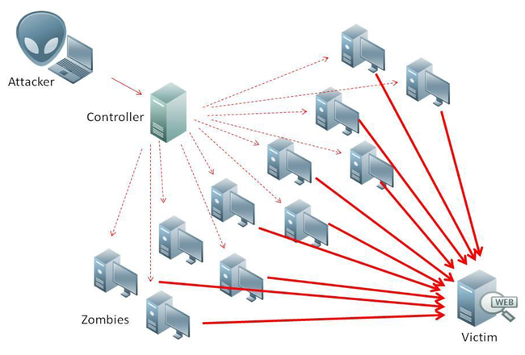

Sobre nosotros
Trabajos hackers
phishing
Phishing o suplantacion de identidad
Phishing es el delito de enganar a las personas para que compartan informacion confidencial como contrasenas y numeros de tarjetas de credito. Como ocurre en la pesca, existe mas de una forma de atrapar a una victima, pero hay una tactica de phishing que es la mas comun. Las victimas reciben un mensaje de correo electronico o un mensaje de texto que imita (o suplanta su identidad) a una persona u organizacion de confianza, como un companero de trabajo, un banco o una oficina gubernamental. Cuando la victima abre el correo electronico o el mensaje de texto, encuentra un mensaje pensado para asustarle, con la intencion de debilitar su buen juicio al infundirle miedo. El mensaje exige que la victima vaya a un sitio web y actue de inmediato o tendra que afrontar alguna consecuencia. Si un usuario pica el anzuelo y hace clic en el enlace, se le envia a un sitio web que es una imitacion del legitimo. A partir de aqui, se le pide que se registre con sus credenciales de nombre de usuario y contrasena. Si es lo suficientemente ingenuo y lo hace, la informacion de inicio de sesion llega al atacante, que la utiliza para robar identidades, saquear cuentas bancarias, y vender informacion personal en el mercado negro.
El phishing es la forma mas sencilla del ciberataque, y al mismo tiempo la mas peligrosa y efectiva
A diferencia de otros tipos de amenazas de Internet, el phishing no requiere conocimientos tecnicos especialmente sofisticados. De hecho, segun Adam Kujawa, Director de Malwarebytes Labs, el phishing es la forma mas sencilla de ciberataque y, al mismo tiempo, la mas peligrosa y efectiva. Eso se debe a que ataca el ordenador mas vulnerable y potente del planeta: la mente humana. Los autores del phishing no tratan de explotar una vulnerabilidad tecnica en el sistema operativo de su dispositivo, sino que utilizan "ingenieria social". Desde Windows e iPhones a Macs y Androids, ningun sistema operativo esta completamente a salvo del phishing, con independencia de lo solida que sea su seguridad. De hecho, los atacantes a menudo recurren al phishing porque no pueden encontrar ninguna vulnerabilidad tecnica. Por que perder el tiempo tratando de burlar capas de seguridad cuando puede enganar a alguien para que le entregue la llave? En la mayoria de los casos, el eslabon mas debil en un sistema de seguridad no es un fallo oculto en el codigo informatico, sino una persona que no comprueba la procedencia de correo electronicoDDOS
DDOS
que es el DDOS y como puede afectarte
Los ataques DDoS estan cada vez mas presentes en la actualidad, sobre todo desde que hace unos meses se utilizase uno para dejar inaccesibles simultaneamente servicios como Twitter, Netflix o Spotify. Casos como este han hecho que deje de ser un termino que solo conocen los expertos en seguridad informatica para convertirse en uno que conviene comprender para entender mejor la realidad en la que vivimos. Las siglas de DDoS significan Distributed Denial of Service o ataque distribuido denegacion de servicio. Pero no te preocupes si no te dicen demasiado, porque hoy vamos a tratar de explicarte de forma clara y sencilla que es exactamente este tipo de ataque y hasta que punto puede afectarte.
Que es un ataque DDoS?
En esencia, un ataque DDoS es cuando un grupo de personas o automatismos atacan a un servidor u ordenador desde muchos equipos a la vez. Este flujo masivo de datos hace que los recursos del servidor acaben no siendo suficientes, lo que provoca que colapse y deje de funcionar. Esto hace que si se trata de un equipo que mantiene una web, servicio o comunidad, esta caiga junto al servidor. Tienes que pensar que los servidores tienen unos recursos limitados, por lo que cuando la entrada masiva de trafico hace que los supere, el servidor se apaga o deja de responder a mas peticiones de acceso. Vamos, que dejas de poder entrar. En cualquiera de los dos casos, con el servidor o los servidores caidos, la web o webs que han caido con el no volveran a la normalidad hasta que el ataque pare o se consigan bloquear las conexiones atacantes.  Este tipo de ataques puede utilizarse por lo tanto para tirar webs y servicios online fastidiando a sus usuarios. Pero tambien es una herramienta util para los administradores, ya que es un muy buen metodo para comprobar cual es la capacidad de trafico real que tiene un ordenador o servidor antes de quedarse sin recursos y afectar a los servicios que se prestan o alojan en el. Un ataque DDoS por lo tanto es una tecnica bastante sencilla, aunque puede haber algunas modificaciones. Por ejemplo se pueden enviar los datos muy lentamente para que el servidor simplemente consuma mas recursos, alterar los paquetes para que el servidor se quede esperando indefinidamente una respuesta de una IP falsa. Tambien se utilizan mucho los ataques mediante los botnets, redes de equipos secuestrados o infectados que se comportan como un enjambre y atacan todos a la vez. Las consecuencias de este tipo de ataque depende de la amplitud de estas redes, pero estas cada vez son mas grandes y empiezan a ir mas allade los ordenadores convencionales para afectar tambien a moviles y en el Internet de las Cosas.Como te puede afectar un ataque DDoS?
Por lo general este tipo de ataques no suele ir dirigido hacia personas concretas, pero quiza si hacia empresas como acto de protesta. Si eres una de estas empresas, lo unico que te pueden hacer es colapsar tu servidor y tumbar tus servicios o webs mientras dure el ataque, aunque fisicamente tus equipos no corren peligro. A nivel de usuario, el impacto depende de cual sea el objetivo. Por ejemplo, en las navidades de 2014 dos ataques de este tipo tumbaron PlayStation Network y Xbox Live impidiendo que los usuarios de las consolas de Sony o Microsoft pudieran jugar durante las festividades. Servicios como ExtraTorrent o Telegram tambien los han sufrido, aunque su impacto fue bastante menor. Bastante mas sonado fue cuando en vez de ir a por los servidores de los servicios en si, en octubre del 2016 se dirigio uno de estos ataques a una popular empresa de DNS. Esto impidio que las webs de todos los servicios que operaban con ella dejasen de poder ser traducidas a direcciones IP por los equipos de los usuarios, lo que dejo inoperativos en todo el mundo a servicios como Twitter, Paypal, Play Station Network o la CNN. Y por ultimo, tambien es importante saber que te puede afectar de modo colateral. Existe malware especialmente disenado para convertir en zombis los ordenadores que infecta y crear con ellos las botnets que hemos mencionado antes para realizar ataques DDoS con ellos. Esto quiere decir que una vez infectado, alguien puede tomar el control de tu equipo sin que te des cuenta, y que tu ordenador podria realizar ataques sin tu permiso cuando el dueno del malware se lo indique.Hacking Crypto's
Nuestro equipo
Conoce a nuestro equipo de trabajo
Diablo
Dueno de la secta crypto hackers.
Mari
segunda duena y maestra hacker.
dealer
Uno de los trabajadores dedicados al hacking.